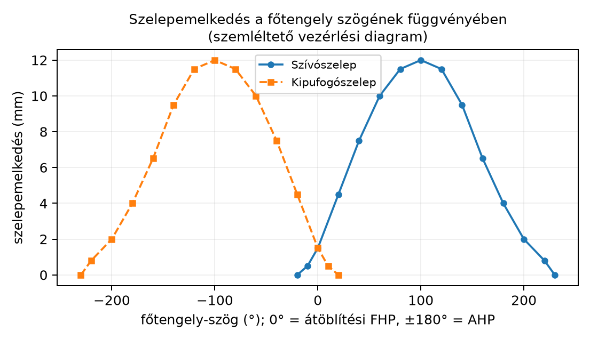

A műhelyben gyakori panasz: „hidegen durva az alapjárat, melegen elfogadható, néha csattog a motortér”. Ilyenkor a hibafelvétel a gyújtás vagy a befecskendezés mellett gyakran a szelepvezérlés felé fordul. Ha egy szívószelep túl későn zár, a henger töltése visszaáramlik a szívócsőbe; ha egy kipufogószelep szorul, a kompresszió elszökik. Ahhoz, hogy ezt ellenőrizni tudjuk, először a vezérlési diagramot kell pontosan leolvasnunk.
Képzeljünk el egy négyütemű benzinmotor hengerfejének metszetét. A vezérműtengely bütyke a szelepemelőn vagy himbán keresztül nyitja a szelepet, a szeleprugó zárja, a szívócsőből friss keverék, a kipufogócsőbe pedig égéstermék áramlik. A főtengelyhez képest a vezérműtengely fele fordulatszámmal forog, ezért a szelepek nyitási és zárási eseményeit főtengely-szögben adjuk meg.
Az alábbi ábra egy szívó- és egy kipufogószelep közelítő emelkedési görbéjét mutatja a főtengely szögének függvényében:

Az ábra szerint a szívószelep nem a felső holtponton (0°) kezd nyitni, hanem már valamivel előtte, és az alsó holtpont után zár. A kipufogószelep már a munkatérfogat alsó holtpontja előtt nyit, és a felső holtpont után zár. A felső holtpont környékén mindkét szelep kis mértékben nyitva van: ez a szelepösszenyitás.
Definíció. Vezérlési diagram. A vezérlési diagram a szívó- és kipufogószelepek emelkedését, illetve a nyitott áramlási keresztmetszetet ábrázolja a főtengely-szög függvényében. Megadja a nyitási és zárási szöghelyzeteket, a nyitvatartási szöget és a szelepösszenyitást.
Definíció. Előnyitás és utánzárás. Előnyitásnak nevezzük, ha a szelep a vonatkozó holtpont előtt kezd nyitni; utánzárásnak, ha a holtpont után zár be teljesen.
Definíció. Szelepösszenyitás. A felső holtpont környékén az a főtengely-szögtartomány, amelyben a szívó- és a kipufogószelep egyszerre, kis emelkedéssel nyitva van.
A szelepek azért nem a holtpontokon nyitnak és zárnak, mert a gázoszlopnak tehetetlensége van, a szelep pedig véges gyorsulással tud elmozdulni. A szívószelep előnyitása biztosítja, hogy mire a dugattyú a szívási ütemet megkezdi, már legyen számottevő szabad áramlási keresztmetszet. Az utánzárás a szívócsőben áramló gáz lendületét használja ki a henger további töltésére. A kipufogószelep előnyitása a lökettérfogat hatékony lefúvatását segíti, utánzárása pedig a henger átöblítését a szívószelep nyitásakor.
Továbbvitt eredmény. A vezérlési diagram és a szelephézag értelmezése közvetlenül szükséges a Vezérműhajtás: fogasszíj, lánc, fogaskerék; a vezérműszíj cseréje alfejezetben a főtengely–vezérműtengely szinkron beállításához, a Feltöltés: turbófeltöltő, változtatható geometria, mechanikus és dinamikus feltöltés alfejezetben a töltéscsere optimalizálásához, valamint a Diagnosztikai alapfogalmak és a motor mechanikai állapotvizsgálata alfejezetben a kompresszió- és szivárgásmérés értelmezéséhez.
Számítás. Nyitvatartási szög és szelepösszenyitás.
Adott: szívószelep nyit 20°-kal a felső holtpont előtt, zár 50°-kal az alsó holtpont után; kipufogószelep nyit 50°-kal az alsó holtpont előtt, zár 20°-kal a felső holtpont után.
Keresett: a szívó- és kipufogószelep nyitvatartási szöge, valamint a szelepösszenyitás szöge.
Képlet: a nyitvatartási szög = előnyitás + 180° + utánzárás.
Behelyettesítés szívószelepre:
Kipufogószelepre:
A szelepösszenyitás a felső holtpont környékén:
Ellenőrzés: a teljes négyütemű ciklus 720°, ezen belül egy-egy szelep nyitvatartási szöge jellemzően 200–280°, a kapott 250° reális. ∎
A kördiagramon felül az FHP, alul az AHP; a főtengely az óramutató járásával egyezően forog, a belső menet az első, a külső a második fordulat. A szívóív 20°-kal az FHP előtt kezdődik és 50°-kal az AHP után ér véget (20° + 180° + 50° = 250°), a kipufogóív 50°-kal az AHP előtt kezdődik és 20°-kal az FHP után zárul (250°); a két ív az FHP körül 40°-on át fedi egymást. Az interaktív változatban a négy szög és a fordulatszám csúszkával állítható, a nyitvatartási szögek, az összenyitás és a nyitvatartási idő azonnal kiolvasható.
Számítás. Vezérműtengely-fordulatszám és nyitási idő.
Adott: főtengely-fordulatszám , szívószelep nyitvatartási szöge .
Keresett: a vezérműtengely fordulatszáma és a szívószelep nyitvatartási ideje.
Képlet: , a főtengely egy körülfordulásának ideje , a nyitási idő .
Behelyettesítés:
Ellenőrzés: egy holtponttól a másikig (180°) a forgás ideje ; a 250°-os nyitás ennél hosszabb, de egy teljes fordulat (0,075 s) ideje alatti, tehát a nagyságrendileg helyes. A vezérműtengelyen a 250° főtengely-szögű esemény 125°-os elfordulásnak felel meg, mert a vezérműtengely fele sebességgel forog. ∎
A vezérlés szerkezeti kialakítását alapvetően a szelepek és a vezérműtengely elhelyezkedése határozza meg. A három leggyakoribb elrendezés az OHV, az OHC és a DOHC.
| Jellemző | OHV | OHC (SOHC) | DOHC |
|---|---|---|---|
| Vezérműtengely helye | motorblokkban | hengerfejben | hengerfejben |
| Vezérműtengelyek száma | 1 | 1 | 2 |
| Szelep működtetése | emelő, tolórúd, himba | emelő vagy himba közvetlenül/közvetve | külön tengely a szívó- és a kipufogószelepeknek |
| Tipikus felhasználás | régebbi, gyakran V-motorok | modern soros motorok | nagy fajlagos teljesítményű motorok |
| Előny | egyszerű blokk, kompakt fej | kevesebb mozgó tömeg, pontosabb vezérlés | nagy fordulatszám-tűrés, független szívó/kipufogó-hangolás |
Definíció. OHV (overhead valve). A szelepek a hengerfejben vannak, a vezérműtengely azonban a motorblokkban. A bütyök emelőn, tolórudon és himbán keresztül működteti a szelepeket (felül szelepek, alul vezérműtengely).
Az OHV-megoldás hátránya a hosszú tolórúd és a himba miatti nagyobb mozgó tömeg, ami korlátozza a maximális fordulatszámot. Előnye a viszonylag alacsony hengerfej, ezért régebbi, elsősorban V-elrendezésű, alacsony fordulatszámú motorokban találkozunk vele.
Definíció. OHC (overhead camshaft). A vezérműtengely a hengerfejben van. Egy tengely esetén SOHC-ról (single overhead camshaft) beszélünk, amely közvetlen emelőn vagy rövid himbán keresztül nyitja a szelepeket.
Definíció. DOHC (double overhead camshaft). Két vezérműtengely van a hengerfejben; az egyik a szívó-, a másik a kipufogószelepeket vezérli. A DOHC lehetővé teszi a kis mozgó tömeget, a szívó- és kipufogóoldal eltérő vezérlési diagramját és a nagy fordulatszámú töltéscserét.
A mai európai személygépkocsikban az OHC és a DOHC a meghatározó. Öt szelepes hengerenkénti megoldás esetén három szívó- és két kipufogószelep lehet; a 4 szelepes DOHC elrendezés a leggyakoribb (ellenőrizendő: a konkrét motor gyártói adata).
Az ábra bal oldalán az OHV-motor vezérműtengelye a blokkban van, a bütyök emelőt, hosszú tolórudat és himbát mozgat; középen a SOHC vezérműtengelye a hengerfejben ül, és rövid billenőkaron át nyit; jobbra a DOHC két vezérműtengelye csészés emelőn át közvetlenül nyomja a szívó-, illetve a kipufogószelepet. A szürke elemek mutatják, mennyi tömeget kell a bütyöknek minden nyitáskor felgyorsítania.
A szelepek extrém hő- és mechanikai terhelésnek vannak kitéve. A kipufogószelep feje jellemzően 700–900 °C tartományba is kerülhet (ellenőrizendő: konkrét motortípus szerint), és egyidejűleg ütésszerű, ciklikus terhelést kap. Az anyagválasztás ezért kritikus.
Szelepek. A szívószelep hűvösebb közeggel érintkezik, ezért gyakran nemesíthető acélból készül. A kipufogószelep hőálló ausztenites vagy különleges szelepacél, egyes kivitelekben a szelepszár üreges és nátriumtöltésű a hő elvezetése érdekében (ellenőrizendő: gyártói műszaki leírás). A szelep feje kúpos, tányér alakú; a szelepülékhez illeszkedő tömítőfelület jellemző szöge 45°, ritkábban 30° (ellenőrizendő: gyártói adat).
Szelepülék és szelepvezető. A hengerfejbe sajtolt, hőálló anyagú ülékgyűrű biztosítja a tömítést és a hő elvezetését. A szelepvezető a szelepszár vezetését és a radiális játékot szabja meg. A kopott vezető olajtovábbítást, olajfogyasztást és a szelep bizonytalan záródását okozhatja.
Szeleprugók. A rugó ereje zárja a szelepet és tartja a bütyök pályáján a mozgást. Nagy fordulatszámon a rugó saját rezonanciája szelepúszást (szelep „lebegését”) okozhat, ezért gyakran két rugót, progresszív rugót vagy könnyebb titánszelepeket használnak.
Himbák, emelők, szelepforgatók. A bütyök erőjátéka miatt a szelepet forgatni is szokták; a szelepforgató a szelep tányérjának lassú elfordításával egyenletesebb hőmérséklet-eloszlást és ülékkopást segít (ellenőrizendő: a tényleges szerkezet gyártónként eltér). A himbás megoldásnál a himba áttétele csökkentheti a bütyökemelkedésből származó szelepemelkedést vagy fordítva.
A robbantott ábrán alulról felfelé követhető a szerelési sorrend. A két félkúp alakú szelepék a szár ékhornyába kapaszkodik, és a felső rugótányér kúpos furatába ékelődik: minél nagyobb a rugóerő, annál erősebben szorítják a szárat, ezért a rugótányér nem csúszhat le. Az ülékrészleten a tányér 45°-os ülékfelülete és az ülékgyűrű keskeny érintkezési sávja látszik, ezen át záródik a szelep és távozik a hő.
A szelep hőtágulása miatt a bütyök és a szelepszár vége között bizonyos játékot kell hagyni.
Definíció. Szelephézag. A szelepszár vége és a működtető elem (himbás kar, emelő vagy a bütyök alapköre) közötti, hideg motornál mérhető játék, amely lehetővé teszi a szelep teljes záródását és a hőtágulás felvételét.
Túl nagy hézagnál a szelep később nyit, hamarabb zár, a motor csattog, a hézagütés kopást okoz. Túl kis hézagnál a szelep melegen nem tud teljesen lezárni, az égésgáz megfújja a szelepfészket, ami szelepégéshez vezethet. A szelephézagot mindig a gyártói előírás szerint, meleg vagy hideg motornál kell mérni (a leggyakoribb a hideg motoron mért érték, például 0,15–0,25 mm; ellenőrizendő: a gyártói javítási adat).
A szelephézag beállításának gyakori módjai:
Definíció. Hidraulikus szelepemelő. Olyan szelepemelő, amely a motor kenőolaj-nyomását felhasználva egy belső dugattyúval és visszacsapó gömbszeleppel a szelephézagot gyakorlatilag nullára állítja, ezáltal hézagmentes, zajmentes vezérlést ad.
A hidraulikus szelepemelő házában egy dugattyú és egy munkakamra van. A szelep zárt állapotában a belső rugó a dugattyút a bütyök alapköréhez nyomja, és a visszacsapó szelepen át olaj áramlik a kamrába. Amikor a bütyök emelni kezd, a gömbszelep zár, így a kamrában rekedt olaj gyakorlatilag összenyomhatatlanként adja át az erőt. A kismértékű belső olajszivárgás a működéshez szükséges; ezért a rendszer érzékeny a szennyezett, levegős vagy nem megfelelő viszkozitású motorolajra.
A hézagot hideg motoron, zárt szelepnél mérjük, amikor a bütyök alapköre áll a követő (alátét, himba) felett; ha a bütyökcsúcs áll szemben, a szelep nyitva van, és a hézagmérő nem ad értelmes eredményt. Az interaktív változatban a bütyök elforgatható, és a lenti számítási példa képletével az új alátétvastagság is kiszámolható.
Számítás. Szelephézag-beállítás cserélhető alátéttel.
Adott: beépített alátét vastagsága , mért szelephézag , előírt szelephézag .
Keresett: a szükséges új alátétvastagság, ha a hézagot pontosan az előírt középérték közelébe akarjuk állítani.
Képlet: az új alátét vastagsága
Behelyettesítés:
Ellenőrzés: a mért hézag 0,10 mm-rel kisebb az előírtnál, ezért a szeleppályát 0,10 mm-rel „lejjebb” kell helyezni, tehát vékonyabb alátét kell. A 2,60 mm-es alátét ezt adja. A beépítés után a hézagot ismét meg kell mérni. ∎
Továbbvitt eredmény. A szelephézag- és alátét-számítás logikája később a Diagnosztikai alapfogalmak és a motor mechanikai állapotvizsgálata alfejezetben a mérési tűréshatárok értelmezéséhez is kell.
A hagyományos, merev vezérműtengely egyetlen vezérlési diagramot ad. A változó szelepvezérlés a fordulatszám és a terhelés függvényében módosítja a szelepnyitás időzítését, emelkedését vagy időtartamát.
A leggyakoribb megoldások:
A változó vezérlés előnye a szélesebb hasznos fordulatszám-tartomány és a kedvezőbb károsanyag-kibocsátás. Diagnosztikája a Rendszerteszter-használat alfejezethez kapcsolódik.
A töltéscsere vezérlését a következő eljárásokkal ellenőrizhetjük:
Figyelem. A kézi főtengelyforgatás előtt a gyújtást ki kell kapcsolni, és a járművet elfordulás ellen biztosítani kell. Szeleprugóval terhelt alkatrészek szerelésekor rugófeszítő célszerszámot kell használni; a kipattanó rögzítőelem szem- és kézsérülést okozhat. A konkrét meghúzási nyomatékok, hézagok és beállítási sorrend gyártói adatok.
Egy 1,6 literes, hidraulikus emelős benzinmotorral szerelt személyautó tulajdonosa „hidegen erős ketyegésre, melegen alig hallható zajra” panaszkodik. Az autó hidegindítás után a műhelyben valóban fémes, szelephézag-szerű kopogást ad, amely körülbelül fél perc után halkul.
A hibakeresési lánc szerint a tünet lehetséges okai: szennyezett vagy levegős hidraulikus emelő, hidegen nagyobb olajnyomás-igényű kopott emelő, hibás olajvisszafolyás, illetve mechanikus hézag a bütyök és az emelő között. A műhelyben először az olajszintet és az olaj állapotát ellenőrizzük; az olaj sötét, sűrűn szennyezett. Az olajnyomás hidegen és melegen is a gyártói tartományban van (ellenőrizendő: a pontos érték a javítási adatból). A hengerfejfedél levétele után a bütyökpályák és az emelők kopását szemrevételezzük: egy emelő felületén erős körkörös kopásnyom látható, és kézzel kis erővel benyomható.
A hiba oka a kopott, olajat nem tartó hidraulikus emelő, amely hideg motornál nem tudja a hézagot kitölteni. A javítás az érintett emelő cseréje a gyártói eljárás szerint, majd az olaj és az olajszűrő cseréje. A próbaüzemen hideg motornál már nincs ketyegés, melegen is stabil az alapjárat. A megelőzés a gyártói olajcsere-intervallum betartása; a késedelmes olajcsere az ilyen emelők leggyakoribb oka.
1. A vezérműtengely a főtengelynél fele akkora fordulatszámmal forog. Igaz-e?
2. Mekkora a szívószelep nyitvatartási szöge, ha az előnyitás 15°, az utánzárás 45°?
3. A mért szelephézag 0,30 mm, az előírt 0,20 mm. Vastagabb vagy vékonyabb alátét szükséges?
4. Miért van a felső holtpont környékén szelepösszenyitás?
5. Mi a hibás lépés ebben a leírásban? „A hidraulikus emelős motoron a hideg motor ketyegése után a szerelő hézagmérővel szorosabbra állítja a himbákat.”
1. feladat (A). Határozza meg a szelepösszenyitás és a nyitvatartási szög fogalmát a vezérlési diagramon.
2. feladat (A). Egy szívószelep 10°-kal a felső holtpont előtt nyit és 40°-kal az alsó holtpont után zár. Számítsa ki a nyitvatartási szöget.
3. feladat (B). Egy DOHC motor szívó oldalán a mért hézag 0,40 mm, a gyári előírás 0,20 mm. A beépített alátét 3,00 mm. Mekkora új alátét szükséges?
4. feladat (B). A főtengely fordulatszáma 2500 1/min, a kipufogószelep nyitvatartási szöge 260°. Számítsa ki a kipufogószelep nyitvatartási idejét.
5. feladat (C). Az ábra szerinti vezérlési diagramon a szívószelep –20°-nál kezd nyitni és 230°-nál zár, a kipufogószelep –230°-nál nyit és 20°-nál zár. Becsülje meg a szelepösszenyitást, és magyarázza el, miért nem nulla.
6. feladat (C). Miért előnyös a DOHC elrendezés egy nagy fordulatszámú szívómotornál az OHV-val szemben?
7. feladat (D). Ügyfél panasza: hideg motoron csattogás, melegen szinte hangtalan, de az alapjárat kissé egyenetlen. A kompresszió minden hengerben jó, az olajnyomás a gyári érték. Mi a következő ellenőrzési lépés, és milyen mérési eredmény valószínű?
Önellenőrzés – válaszok
Feladatok megoldása
1. feladat. A nyitvatartási szög az a főtengely-szög, amely alatt a szelep a nyitás kezdetétől a teljes zárásig nyitva van. A szelepösszenyitás a felső holtpont környéki szögtartomány, ahol a szívó- és kipufogószelep egyszerre nyitva van.
2. feladat. Adott: előnyitás 10°, utánzárás 40°. Képlet: . Ellenőrzés: reális 200–280° között. ∎
3. feladat. Adott: , , . Képlet: . Behelyettesítés: . Ellenőrzés: a hézag 0,20 mm-rel nagyobb, tehát vastagabb alátét kell. ∎
4. feladat. Adott: , . A főtengely fordulatideje . A nyitási idő . Ellenőrzés: 260° a teljes 360°-nál kisebb, tehát 0,024 s-nál rövidebb időt kapunk. ∎
5. feladat. A szelepösszenyitás a szívó előnyitása és a kipufogó utánzárása a felső holtpont körül: . Nem nulla, mert a gázdinamika és a szelepek véges nyitási sebessége ezt indokolja.
6. feladat. A DOHC kisebb mozgó tömeget és rövidebb erőátviteli utat ad, így nagyobb fordulatszámon kisebb a szelepúszás és pontosabb a vezérlés. Külön szívó- és kipufogótengellyel a két diagram szabadabban hangolható.
7. feladat. A következő lépés a hengerfejfedél levétele után a hidraulikus emelők és a bütyökpályák szemrevételezése, valamint az emelő kézi ellenőrzése. Valószínűleg kopott, szennyezett vagy levegős hidraulikus emelő található, amely hidegen nem tölti ki a hézagot, ezért ketyeg.
A töltéscsere vezérlése a négyütemű motor levegőellátásának és égéstermék-elvezetésének időzítését szabja meg. A vezérlési diagram a szelepek emelkedését mutatja a főtengely-szög függvényében; a szívószelep jellemzően a felső holtpont előtt nyit és az alsó holtpont után zár, a kipufogószelep a munkatérfogat alsó holtpontja előtt nyit és a felső holtpont után zár. A felső holtpont körüli közös nyitási szakasz a szelepösszenyitás, amely a futási átöblítést és a töltésjavítást szolgálja. A vezérműtengely a főtengely fele fordulatszámával forog, ezért a diagramot főtengely-szögben adjuk meg. A szerkezet lehet OHV, OHC vagy DOHC; a korszerű motorokban az OHC/DOHC a jellemző. A szelephézag a hőtágulás felvételére szolgál: túl nagy hézag zajt és késő nyitást, túl kicsi hézag pedig szelepégést okoz. A hézag állítható csavarral, cserélhető alátéttel vagy hidraulikus emelővel. A változó szelepvezérlés a fordulatszám és terhelés szerint módosítja a nyitási időt, a fázist vagy az emelkedést. A diagnosztikában a vezérlési diagram, a szelephézag, a kompressziómérés és a hengerszivárgás-mérés együtt adja meg a motor töltéscsere-állapotát.
Továbbvitt eredmény. A vezérlési diagram és a szelephézag-értelmezés a Vezérműhajtás alfejezetben a szinkron beállításához, a Feltöltés alfejezetben a töltéscsere-hangolásához, a Diagnosztikai alapfogalmak és a motor mechanikai állapotvizsgálata alfejezetben a mérési eredmények értékeléséhez szükséges.
Az alfejezet a belső égésű motorok töltéscsere-folyamataira vonatkozó általános gépjármű-szerkezettani, termodinamikai és műhelydiagnosztikai ismeretekre épül. Nem tartalmaz önálló jogszabályi vagy ENSZ-EGB-előírás-hivatkozást. A megadott szelephézag-értékek, nyitási szögek, hőmérsékletek és anyagjellemzők tanulási példák; a konkrét javítási műveleteknél mindig a gyártói javítási utasítás és a hatályos műszaki adat az irányadó. Az ellenőrizendő állítások: a szelephézag jellemző tartománya, a szelepülék szöge, a kipufogószelep üzemi hőmérséklete és a hidraulikus emelő belső kialakítása. A szerkezeti elvek leírása a kerettanterv tanulási szintjének megfelelő, nem helyettesíti a gyártói rajz és mérési adatok tanulmányozását.